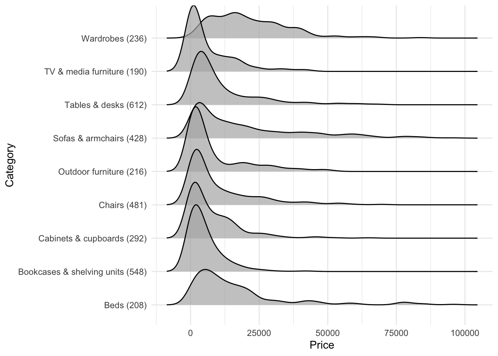
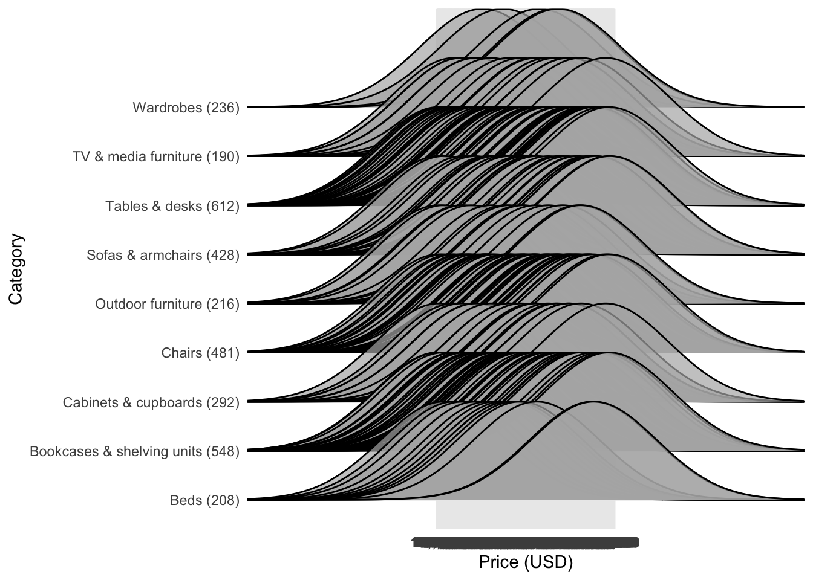
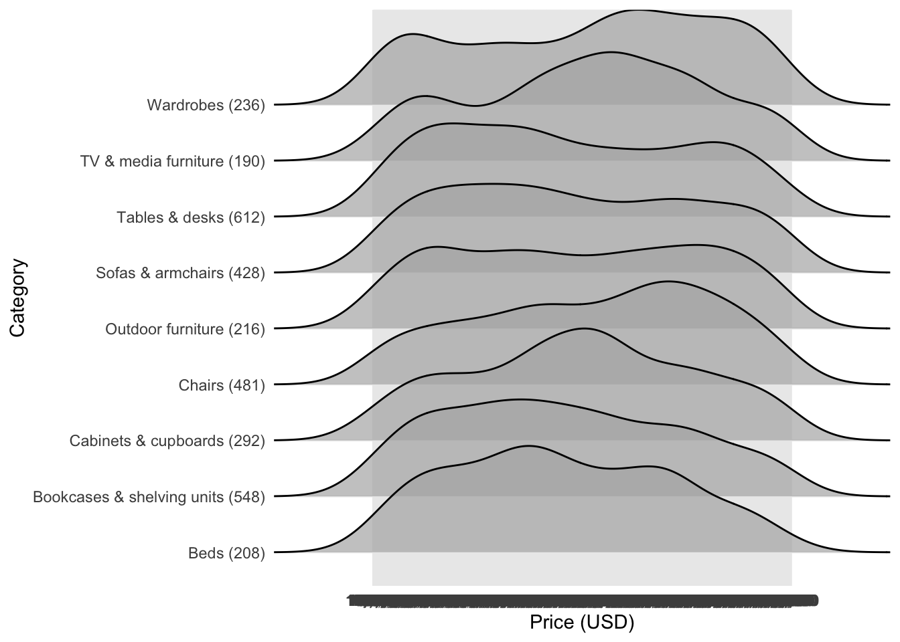

── Attaching core tidyverse packages ──────────────────────── tidyverse 2.0.0 ──
✔ dplyr 1.1.4 ✔ readr 2.1.5
✔ forcats 1.0.0 ✔ stringr 1.5.1
✔ ggplot2 3.5.1 ✔ tibble 3.2.1
✔ lubridate 1.9.3 ✔ tidyr 1.3.1
✔ purrr 1.0.2
── Conflicts ────────────────────────────────────────── tidyverse_conflicts() ──
✖ dplyr::filter() masks stats::filter()
✖ dplyr::lag() masks stats::lag()
ℹ Use the conflicted package (<http://conflicted.r-lib.org/>) to force all conflicts to become errors
library(mosaic)
Registered S3 method overwritten by 'mosaic':
method from
fortify.SpatialPolygonsDataFrame ggplot2
The 'mosaic' package masks several functions from core packages in order to add
additional features. The original behavior of these functions should not be affected by this.
Attaching package: 'mosaic'
The following object is masked from 'package:Matrix':
mean
The following objects are masked from 'package:dplyr':
count, do, tally
The following object is masked from 'package:purrr':
cross
The following object is masked from 'package:ggplot2':
stat
The following objects are masked from 'package:stats':
binom.test, cor, cor.test, cov, fivenum, IQR, median, prop.test,
quantile, sd, t.test, var
The following objects are masked from 'package:base':
max, mean, min, prod, range, sample, sum
library(skimr)
Attaching package: 'skimr'
The following object is masked from 'package:mosaic':
n_missing
Rows: 3211 Columns: 15
── Column specification ────────────────────────────────────────────────────────
Delimiter: ";"
chr (8): name, category, old_price, link, other_colors, short_description, d...
dbl (5): item_id, depth, height, width, category_total
num (1): price
lgl (1): sellable_online
ℹ Use `spec()` to retrieve the full column specification for this data.
ℹ Specify the column types or set `show_col_types = FALSE` to quiet this message.
ikea
# A tibble: 3,211 × 15
item_id name category price old_price sellable_online link other_colors
<dbl> <chr> <chr> <dbl> <chr> <lgl> <chr> <chr>
1 29123958 MINNEN Beds (2… 3950 SR 445 TRUE http… No
2 49278341 BRIMNES Beds (2… 8950 SR 925 TRUE http… No
3 50461230 SMÅGÖRA Beds (2… 5950 No old p… TRUE http… No
4 89326463 PLATSA Beds (2… 21110 SR 2,205 TRUE http… No
5 50468953 VATTVIK… Beds (2… 9950 No old p… TRUE http… No
6 69326609 SLÄKT Beds (2… 5400 No old p… FALSE http… No
7 59099136 BRIMNES Beds (2… 7950 No old p… TRUE http… Yes
8 40395245 NEIDEN Beds (2… 990 No old p… TRUE http… No
9 69277307 LEIRVIK Beds (2… 11950 No old p… TRUE http… Yes
10 70395239 NEIDEN Beds (2… 1990 No old p… TRUE http… No
# ℹ 3,201 more rows
# ℹ 7 more variables: short_description <chr>, designer <chr>, depth <dbl>,
# height <dbl>, width <dbl>, price_usd <chr>, category_total <dbl>
skim(ikea)
Data summary
Name
ikea
Number of rows
3211
Number of columns
15
_______________________
Column type frequency:
character
8
logical
1
numeric
6
________________________
Group variables
None
Variable type: character
skim_variable
n_missing
complete_rate
min
max
empty
n_unique
whitespace
name
0
1
3
27
0
583
0
category
0
1
10
32
0
9
0
old_price
0
1
4
13
0
351
0
link
0
1
52
163
0
2765
0
other_colors
0
1
2
3
0
2
0
short_description
0
1
3
54
0
1566
0
designer
0
1
3
1261
0
374
0
price_usd
0
1
5
8
0
969
0
Variable type: logical
skim_variable
n_missing
complete_rate
mean
count
sellable_online
0
1
1
TRU: 3196, FAL: 15
Variable type: numeric
skim_variable
n_missing
complete_rate
mean
sd
p0
p25
p50
p75
p100
hist
item_id
0
1.00
48811299.01
28815585.18
102065
20403626
49289392
70403939
99932615
▇▇▇▇▇
price
0
1.00
11623.64
14439.10
30
1855
5950
15960
95850
▇▂▁▁▁
depth
1341
0.58
56.16
32.12
1
37
47
66
257
▇▅▁▁▁
height
925
0.71
104.86
63.93
1
70
83
140
700
▇▂▁▁▁
width
563
0.82
110.31
73.86
1
60
81
150
420
▇▅▂▁▁
category_total
0
1.00
422.41
152.34
190
236
481
548
612
▆▂▃▃▇
inspect(ikea)
categorical variables:
name class levels n missing
1 name character 583 3211 0
2 category character 9 3211 0
3 old_price character 351 3211 0
4 sellable_online logical 2 3211 0
5 link character 2765 3211 0
6 other_colors character 2 3211 0
7 short_description character 1566 3211 0
8 designer character 374 3211 0
9 price_usd character 969 3211 0
distribution
1 BESTÅ (5.3%), PAX (3.5%) ...
2 Tables & desks (612) (19.1%) ...
3 No old price (82.1%), SR 1,385 (0.2%) ...
4 TRUE (99.5%), FALSE (0.5%)
5 (%) ...
6 No (57.6%), Yes (42.4%)
7 Chair (1.7%) ...
8 IKEA of Sweden (23.2%) ...
9 27,000 (1.5%), 6,750 (1.5%) ...
quantitative variables:
name class min Q1 median Q3 max
1 item_id numeric 102065 20403626 49289392 70403939 99932615
2 price numeric 30 1855 5950 15960 95850
3 depth numeric 1 37 47 66 257
4 height numeric 1 70 83 140 700
5 width numeric 1 60 81 150 420
6 category_total numeric 190 236 481 548 612
mean sd n missing
1 4.881130e+07 2.881559e+07 3211 0
2 1.162364e+04 1.443910e+04 3211 0
3 5.615829e+01 3.212208e+01 1870 1341
4 1.048635e+02 6.392570e+01 2286 925
5 1.103123e+02 7.386185e+01 2648 563
6 4.224145e+02 1.523443e+02 3211 0
Observations: There are alot of missing row for depth, height and width variables. The minimum price for an item is 30, the max price for an item is 95850, while the median price is 5950. This median of the prices shows items with price in 5 digits are an exception.
Target Variable: price, price_usd
Predictor variables: category, other_colors
Plotting the Ridge Graph with both price and price_usd
1. price on x-axis
ggplot(ikea, aes(x = price, y = category)) +geom_density_ridges(scale =2, alpha =0.7) +labs(x ="Price", y ="Category") +theme_minimal()
Picking joint bandwidth of 2860

2. price_usd on x-axis
ggplot(ikea, aes(x = price_usd, y = category)) +geom_density_ridges(scale =2, alpha =0.7) +labs(x ="Price (USD)", y ="Category") +theme_minimal()
Picking joint bandwidth of 345

Observations: This graph plots multiple ridges for the same category. After searching on google, I found that there might be sub-categories in the category variable which are showing up as different ridges. But this is only the case when I use price_usd as the target variable and not when I use price. I still could not find a reason for that.
3. price_usd on x-axis with grouped categories
Following google’s suggestions, I have grouped the category column which seems to have solved the problem of multiple ridges.
# Ensure price_usd is numericggplot(ikea, aes(x = price_usd, y = category, group = category)) +geom_density_ridges(scale =2, alpha =0.7) +labs(x ="Price (USD)", y ="Category") +theme_minimal()
Picking joint bandwidth of 76.6

Plotting the Ridge Graph with both price and price_usd including the other_colors variable
1. price_usd on x-axis along with other_colors
I am yet to figure out how the group code works in this. I have simply copied and modified the code from google for this graph.
ikea$other_colors <-as.factor(ikea$other_colors)ggplot(ikea, aes(x = price_usd, y = category, fill= other_colors, group =interaction(category, other_colors))) +geom_density_ridges(scale =1, alpha =0.5)
Research Experiment that might have been conducted to obtain that data: I think the motive behind the collection of this data was to track the items present in some Ikea Warehouse. This data doesn’t seem to be motivated by any research query as It doesn’t contain the variables like production cost, raw materials information, transport cost, or other predictor variables which determine the price of an item.
Questions that the Graph seeks to answer: Looking into the difference in the price of Ikea items available in different colors versus only in one color.
My Experience: I was not able to make the exact replication of the graph given and I think the main reason behind that would be the missing decimal points in the values in the price variable. I am not able to achieve the same range on the x-axis for price and price_usd. I think if I fix the decimal point in the values in those variables, my graph plot would look closer to the original version.
Inference: Looking at the majority of graphs in all the categories, It seems that the items with no other color options available are in the lesser price range compared to the items with multiple color options. It is only the ‘Chairs’ and ‘Tables and Desks’ Categories which seem to contradict the trend with less price range of items available in multiple colors. I think the reason behind this might be that chairs and desks are more frequently bought, lower price items and hence, one model is available in multiple colors in a lower price range.